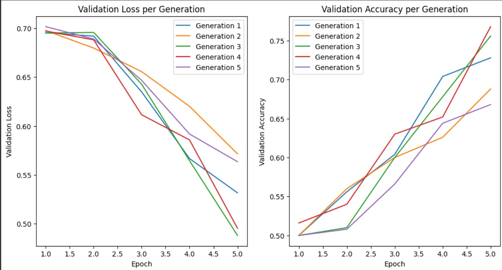
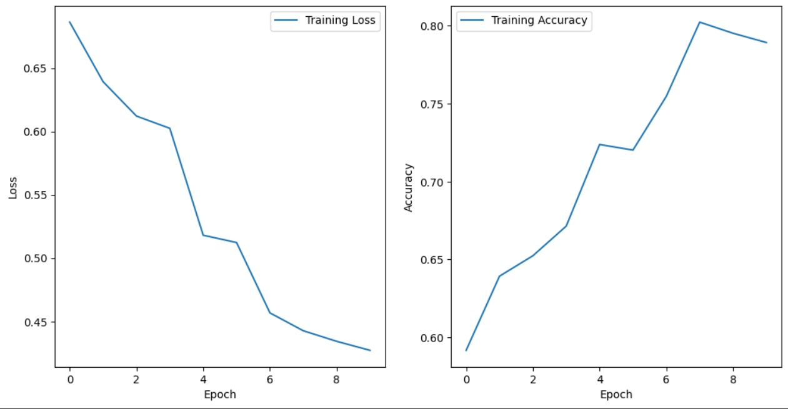
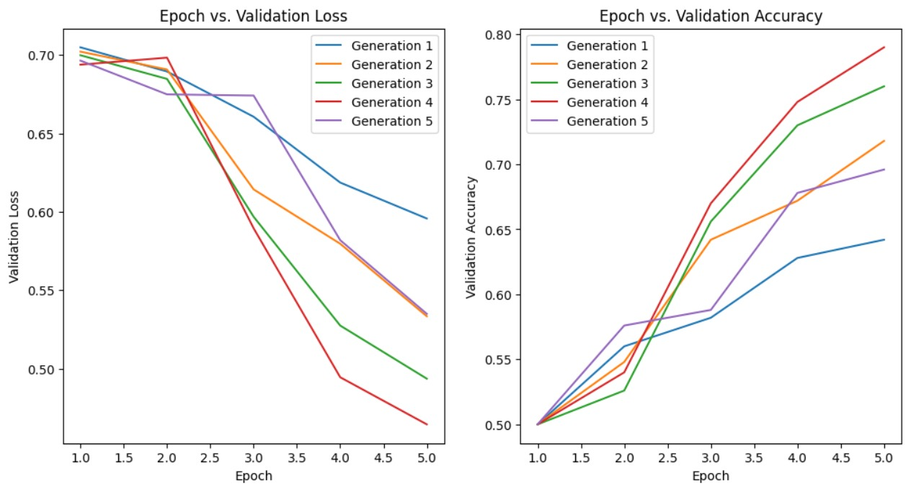
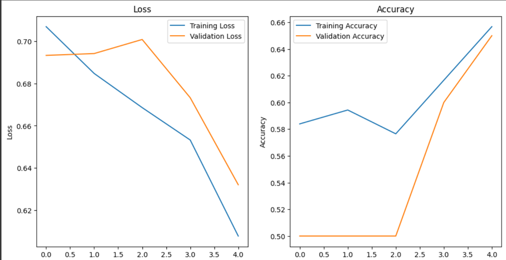

As the development of AI increases day by day, we find the need to adapt to ever changing dynamics of the digital world. As data becomes more abundant in few cases and redundant in other, we need a method that can efficiently and effectively analysing and build machine learning models that can adapt through this ever-changing environment. At the forefront of AI development is neural networks, which have become an integral part of every aspect of AI & ML. In this computer heavy world, we chose to analyse the root idea of neural networks, i.e. natural principles that govern the development of brains and neurons in the ever-evolving natural world. We implemented nature’s laws and Darwin’s principle, to understand how it can affect the development of these neural networks. Using various types of neural networks such as ANN, CNN and RNN, in multiple tasks such as disease detection, disease classification and sentiment analysis, we have identified that our models outperform their traditional counterparts, in both accuracy and efficiency. Index Terms—Artificial intelligence, Machine learning, Neural network and Genetic algorithms, classifiers
A skin disease classifier developed using the neural network
algorithm in machine learning, adhering to the conventional
learning approach. The modified version incorporates both
the genetic principle and the principle of natural selection,
involving processes such as crossover and mutation.
 
Results loss and accuracy graph of models trained using starved data
ANN classifier using GA algorithm
 
Results loss and accuracy graph of models trained using starved data
and traditional ANN traditional
The classifier is designed to undergo training with a specified
generation value, and an additional feature allows the
training to halt if five consecutive epochs exhibit the same
accuracy or negligible changes. The accuracy versus epoch
graphs for the GA and traditional models trained using starved
data are given in Fig 04,05,06,07. We have observed enhanced
results in the entire neural network algorithm, when they are
faced against starved data.
The ANN GA model shows similar results compared to the
traditional mode, showing around 82% accuracy using starved
data, compared to its traditional counterpart showing around
80%, but at reduced training time, taking 40% less time in
reaching the same level of accuracy. The CNN GA classifier
model shows higher results compared to its traditional counterpart,
getting 20% higher accuracy compared to the traditional
model.
Our project aimed to explore the advantages of usage of genetically modified algorithm, in situation where data is sparse or not very well documented or collected. We have achieved superior results compared to the traditional models of CNN and ANN. While this project was just a scratch, we hope to inspire more people to explore the domain of integrating biology into artificial intelligence and machine learning, and help develop more adaptive AI algorithms for the future. We have observed a few drawbacks such as high demand on the processing capability requirements for the devices to train the algorithms, and as such hope further researchers to aid in optimizing this demand of GA algorithms.